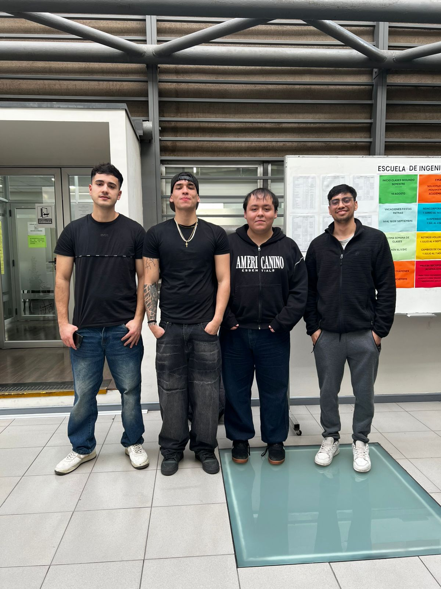

S01 - Identidad del equipo y desafío
Fecha: 20-08-2026
Participantes: BENJAMÍN JARPA, SEBASTIÁN MEDALLA, CÉSAR OLIVARES, PABLO TRONCOSO
Lugar o modalidad: Presencial / En línea
Objetivo de la sesión
Construir la identidad del equipo, acordar su forma de trabajo y realizar una primera interpretación del desafío Capstone.
Foto del equipo

Nombre del equipo
Nombre: PluvioTech
¿Por qué lo elegimos?
Se elige este nombre porque combina “pluvio” (lluvia, aluvión) con “tech” (tecnología), reflejando el enfoque del proyecto: una solución tecnológica para un problema natural relacionado con la lluvia y los aluviones.
Integrantes y roles iniciales
| Integrante | Carrera o especialidad | Rol inicial | Aporte esperado |
|---|---|---|---|
| SEBASTIÁN MEDALLA | ICC110-2024 | Coordinación y diseño técnico | Liderar reuniones, apoyar en arquitectura de hardware/software |
| PABLO TRONCOSO | ICI110-2024 | Investigación y vínculos externos | Búsqueda de información, contacto con SERNAGEOMIN/municipio |
| CÉSAR OLIVARES | ICC110-2024 | Documentación y calidad | Organización de archivos, revisión de informes y bitácoras |
| BENJAMÍN JARPA | ICC110-2024 | Aspecto social y comunitario | Enfoque en usuarios, comunidad y protocolos de alerta |
Valores del equipo
- Responsabilidad y compromiso.
- Respeto y escucha activa.
- Transparencia y honestidad.
- Enfoque en el usuario y la comunidad.
- Mejora continua e iteración
Normas y contrato de funcionamiento
- Tolerancia máxima de 10 minutos para reuniones programadas.
- Canales oficiales de comunicación: WhatsApp, Meet, Drive y GitHub.
- Anticipación de entregas entre el equipo para revisión antes de la fecha final.
- Avisar con un mínimo de 6 horas de anticipación si no se podrá asistir a una reunión.
- Conflictos: se conversan directamente en el equipo; si no hay acuerdo, se decide por votación simple.
- GitHub: se actualiza al menos una vez por semana con avances, documentos y bitácoras.
Primera definición del desafío
Modernizar la red comunitaria de monitoreo de precipitaciones y riesgo aluvional en San José de Maipo mediante el diseño de un prototipo de bajo costo (pluviómetro/sensores inteligentes) capaz de capturar, almacenar y transmitir datos operativos incluso bajo condiciones de conectividad limitada, integrando reportes de observadores ciudadanos para fortalecer la alerta temprana en las quebradas vulnerables. Smart
Lo que sabemos
- San José de Maipo tiene aproximadamente 105 quebradas, de las cuales cerca de 50 tienen población expuesta a aluviones.
- Existen observadores locales y pluviómetros ciudadanos artesanales, pero los datos se registran de forma manual y dispersa.
- Se requiere una alternativa de bajo costo que automatice parte del monitoreo, facilite el registro, almacenamiento y visualización de datos, y opere con conectividad limitada.
- El producto mínimo esperado incluye un prototipo de pluviómetro y temperatura inteligente, un modelo operativo para la red comunitaria y una demostración de registro y visualización de datos.
Lo que todavía no sabemos
- ¿Cuáles son las principales limitaciones técnicas y operativas de los pluviómetros y observadores actuales en la comuna?
- ¿Qué nivel de conectividad real existe en los sectores más expuestos a aluviones?
- ¿Qué tipo de alertas y formatos de información son más útiles para la comunidad y las autoridades locales?
- ¿Qué instituciones o personas clave podrían apoyar con información, datos o validación del proyecto?
Supuestos que debemos comprobar
- Que es posible implementar sensores y comunicación básica en condiciones de conectividad limitada.
- Que SERNAGEOMIN, el municipio o SENAPRED pueden actuar como socios o validadores del modelo de monitoreo.
Objetivo SMART del equipo
Diseñar y validar, un prototipo de pluviómetro inteligente de bajo costo y un modelo operativo de red comunitaria para el monitoreo de aluviones en San José de Maipo, que automatice parte del registro de datos, integre observaciones ciudadanas y sea evaluado como viable técnica y socialmente por el equipo y actores clave.
Compromisos individuales SMART
| Integrante | Compromiso | Evidencia de cumplimiento | Fecha |
|---|---|---|---|
| SEBASTIÁN MEDALLA | Revisar y sintetizar 3 documentos sobre aluviones y gestión del riesgo en San José de Maipo | [Evidencia] | [Fecha] |
| PABLO TRONCOSO | Contactar a al menos 2 personas de SERNAGEOMIN o municipio para solicitar información y posibles reuniones | [Evidencia] | [Fecha] |
| César Olivares | Estructurar el repositorio en GitHub (carpetas, bitácoras, documentos base) y subir esta bitácora S01 | https://github.com/CesarHD3000/capstone-2026-fluvio-tech | 20-08-2026 |
| BENJAMÍN JARPA | Proponer una primera lista de tecnologías y sensores de bajo costo para pluviómetros | [Evidencia] | [Fecha] |
Acuerdos y tareas
| Tarea | Responsable(s) | Fecha límite | Estado |
|---|---|---|---|
| Revisar y sintetizar documentos sobre aluviones y gestión del riesgo en San José de Maipo | SEBASTIÁN MEDALLA | [Fecha] | Pendiente |
| Contactar a SERNAGEOMIN/municipio para solicitar información y posibles reuniones | PABLO TRONCOSO | [Fecha] | Pendiente |
| Estructurar repositorio GitHub y subir bitácora S01 | César Olivares | 27-08-2026 | Completado |
| Proponer lista preliminar de tecnologías y sensores de bajo costo para pluviómetros | BENJAMÍN JARPA | [Fecha] | Pendiente |
Reflexión breve
¿Qué fue fácil?
Ponerse de acuerdo en el nombre del equipo y en la comprensión general del desafío a partir del documento base.
¿Qué fue difícil o generó desacuerdo?
Definir roles iniciales y priorizar qué tareas abordar primero en la fase de empatización.
¿Qué necesitamos resolver en la próxima sesión?
Profundizar en la comprensión del contexto local (quebradas, observadores, instituciones) y afinar las preguntas de investigación para la fase de empatía del Design Thinking.